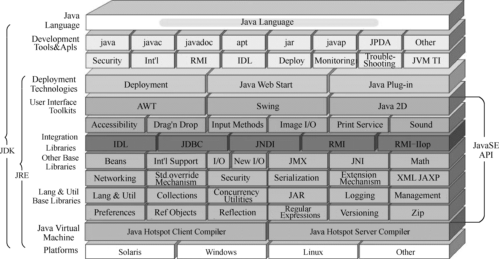

1.5 Java SE的结构
Java SE是Java的基础，它包含Java语言基础、JDBC数据库操作、I/O（输入/输出）、网络通信、多线程等技术，Java SE（J2SE）的结构如图1.3所示。
JDK是一个Java应用程序的开发环境。它由两部分组成，下层是处于操作系统层之上的运行环境，上层由编译工具、调试工具和运行Java应用程序所需的工具组成。
JDK主要包含以下基本工具（仅列举部分常用的工具）。
- javac：编译器，将源程序转成字节码文件。
- java：执行器，运行编译后的字节码文件。
- javadoc：文档生成器，从源码注释中自动产生Java文档。
- jar：打包工具，将相关的类文件打包成一个文件。
图1.3 J2SE平台结构
JDK包含以下常用类库。
- java.lang：系统基础类库，其中包括字符串类String等。
- java.io：输入输出类库，例如进行文件读写需要用到。
- java.net：网络相关类库，例如进行网络通信会用到其中的类。
- java.util：系统辅助类库，编程中经常用到的集合属于这个类库。
- java.sql：数据库操作类库，连接数据库、执行SQL语句、返回结果集需要用到该类库。
- javax.servlet：JSP、Servlet等使用到的类库，是Java后台技术的核心类库。